Every Doctors
Frist Doctor
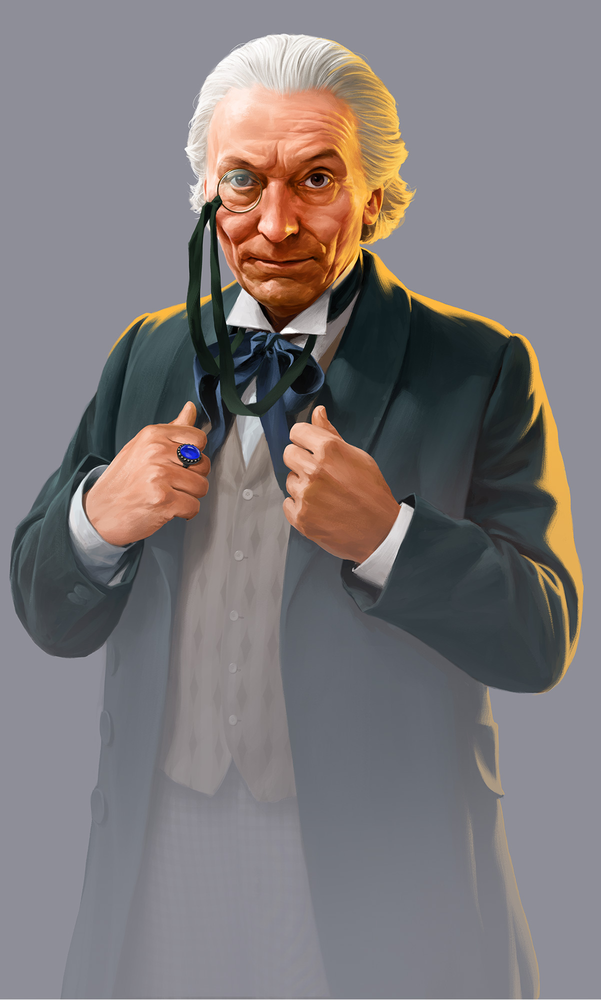
The First Doctor is the original incarnation of the Doctor and the initial protagonist of the BBC science
fiction television series Doctor Who. He was portrayed by actor William Hartnell.
Within the series' narrative, the Doctor is a centuries-old alien Time Lord from the planet Gallifrey
who travels in time and space in the TARDIS, frequently with companions. At the end of life, the Doctor
regenerates; as a result, the physical appearance and personality of the Doctor changes. The concept of
regeneration, initially referred to as a "renewal," was introduced when Hartnell needed to leave the
series, and consequently has extended the life of the show for many years.
Hartnell's portrayal of the character was initially a stubborn and abrasive old man who was distrustful
of humans, but he mellowed out into a much friendlier, grandfatherly figure who adored his travels with
his companions. The First Doctor's original companions were his granddaughter Susan (Carole Ann Ford)
and her schoolteachers Ian Chesterton (William Russell) and Barbara Wright (Jacqueline Hill). In later
episodes, he travelled alongside 25th-century orphan Vicki (Maureen O'Brien), space pilot Steven (Peter
Purves), Trojan handmaiden Katarina (Adrienne Hill), and sixties flower child Dodo Chaplet (Jackie
Lane). His final on-screen companions were the sailor Ben (Michael Craze) and the posh and sophisticated
Polly (Anneke Wills). Of the 134 episodes Hartnell appeared in as a regular, 44 are missing.
Hartnell reprised the role once, in the tenth anniversary story The Three Doctors (1973). The character
occasionally appeared in the series after Hartnell's death, most prominently in 1983's The Five Doctors
where he was portrayed by Richard Hurndall, and two episodes in 2017, in a cameo in "The Doctor Falls"
and in the Christmas special, "Twice Upon a Time", portrayed by David Bradley.
Second Doctor
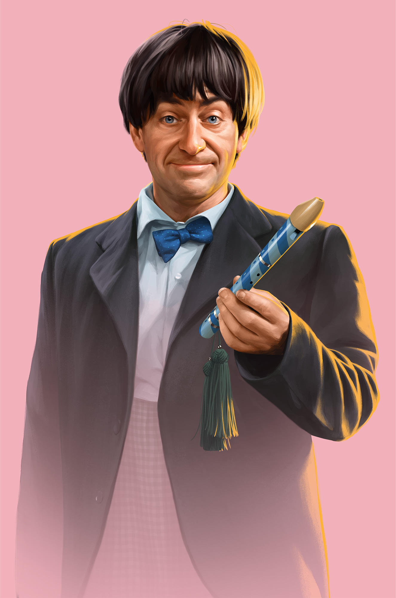
The Second Doctor is an incarnation of the Doctor, the protagonist of the BBC science fiction television
series Doctor Who. He was portrayed by actor Patrick Troughton. While the Troughton era of Doctor Who is
well-remembered by fans and in that era's Doctor Who literature, it is difficult to appraise in full; of
his
119 episodes, 53 remain missing.
Within the series' narrative, the Doctor is a centuries-old alien Time Lord from the planet Gallifrey who
travels in time and space in the TARDIS, frequently with companions. At the end of life, the Doctor
regenerates; as a result, the physical appearance and personality of the Doctor changes. The
transformation
into the Second Doctor (originally referred to as a "renewal"), a figure who was the same 'essential'
character as the first but with a very different persona, was a turning point in the evolution of the
series, and eventually became a critical element of the series' longevity.
Troughton's Doctor was an outwardly scruffy, light hearted and bumbling tramp nicknamed the Cosmic Hobo,
who
hid a more firm and slightly darker side he would often use to manipulate his enemies and allies alike
for
the greater good. His original "swinging sixties" companions were the sophisticated socialite Polly
(Anneke
Wills) and working class sailor Ben Jackson (Michael Craze), who travelled with his previous
incarnation.
They were later joined by 18th century laird Jamie McCrimmon (Frazer Hines), who would become the Second
Doctor's most loyal and trusted companion. Following Ben and Polly's departures, the Doctor and Jamie
were
joined by the Victorian orphan Victoria Waterfield (Deborah Watling) and 21st century astrophysicist Zoe
Heriot (Wendy Padbury). Jamie and Zoe stayed with the Second Doctor until the Time Lords sent them back
to
their own times, with their memories of all but their first encounter with him wiped.
Third Doctor
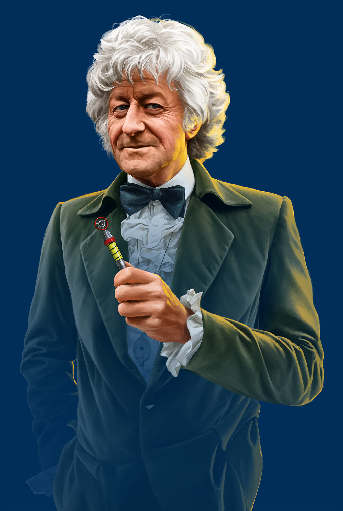
The Third Doctor is an incarnation of the Doctor, the protagonist of the BBC science fiction television
series Doctor Who. He was portrayed by actor Jon Pertwee. Within the series' narrative, the Doctor is a
centuries-old alien Time Lord from the planet Gallifrey who travels in time and space in the TARDIS,
frequently with companions. At the end of life, the Doctor regenerates. Consequently, both the physical
appearance and personality of the Doctor changes.
Pertwee portrays the Third Doctor as a dapper man of action in stark contrast to his wily but less
action-orientated predecessors. While previous Doctors' stories had all involved time and space travel,
for
production reasons Pertwee's stories initially depicted the Doctor stranded on Earth in exile, where he
worked as a scientific advisor to the international military group UNIT. Within the story, the Third
Doctor
came into existence as part of a punishment from his own race, the Time Lords, who forced him to
regenerate
and also disabled his TARDIS. Eventually, this restriction is lifted and the Third Doctor embarks on
more
traditional time travel and space exploration stories.
His initial companion is UNIT scientist Liz Shaw (Caroline John), who unceremoniously leaves the Doctor's
company between episodes to be replaced by the more wide-eyed Jo Grant (Katy Manning), who then
continues to
accompany the Doctor after he regains use of his TARDIS. His final companion is intrepid journalist
Sarah
Jane Smith (Elisabeth Sladen).
Foruth Doctor
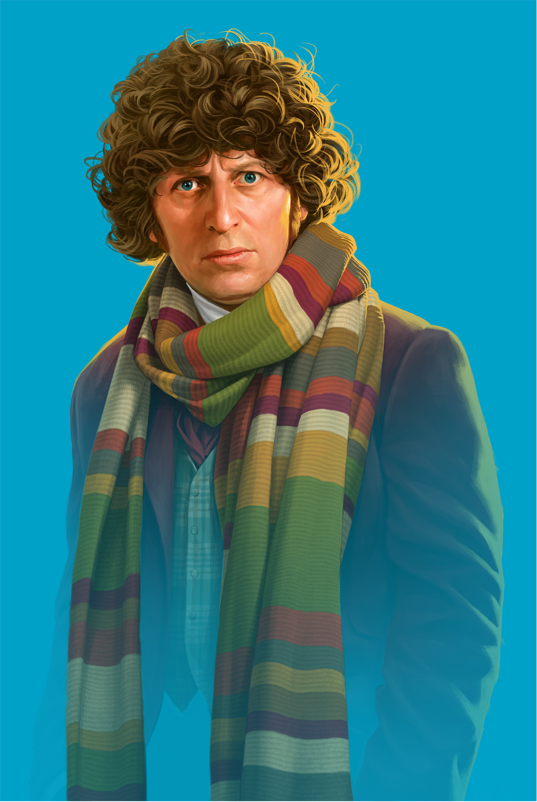
The Fourth Doctor is an incarnation of the Doctor, the protagonist of the BBC science fiction television
series Doctor Who. He is portrayed by Tom Baker.
Within the series' narrative, the Doctor is a centuries-old alien Time Lord from the planet Gallifrey
who travels in time and space in the TARDIS, frequently with companions. At the end of life, the Doctor
regenerates; as a result, the physical appearance and personality of the Doctor changes.
Baker portrays the Fourth Doctor as a whimsical and sometimes brooding individual whose enormous
personal warmth is at times tempered by his capacity for righteous anger. His initial companions were
intrepid journalist Sarah Jane Smith (Elisabeth Sladen), who had travelled alongside his previous
incarnation, and Surgeon-Lieutenant Harry Sullivan (Ian Marter) of UNIT. His later companions were
savage warrior Leela (Louise Jameson), robotic dog K9, Time Lady Romana (Mary Tamm and Lalla Ward), teen
genius Adric (Matthew Waterhouse), alien teenage aristocrat Nyssa (Sarah Sutton), and Australian flight
attendant Tegan (Janet Fielding).
Baker portrayed the character for seven consecutive seasons, which remains the longest tenure of any
actor to portray the lead, counting both the classic and modern series. He is considered to be one of
the most recognisable and iconic incarnations of the Doctor both in the United Kingdom and
internationally.
Fifth Doctor
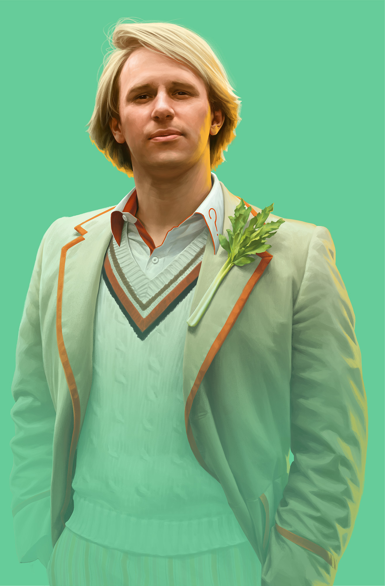
The Fifth Doctor is an incarnation of the Doctor, the protagonist of the BBC science fiction television
series Doctor Who. He is portrayed by Peter Davison.
Within the series' narrative, the Doctor is a centuries-old alien Time Lord from the planet Gallifrey
who travels in time and space in the TARDIS, frequently with companions. At the end of life, the Doctor
regenerates; as a result, the physical appearance and personality of the Doctor changes.
Davison portrays the Fifth Doctor as having a vulnerable side and a tendency towards indecisiveness,
dressed as a boyish Edwardian cricketer. He travelled with a host of companions, including boy genius
Adric (Matthew Waterhouse), alien aristocrat Nyssa (Sarah Sutton) and Australian flight attendant Tegan
Jovanka (Janet Fielding), whom he had travelled alongside in his previous incarnation. He also shared
later adventures alongside devious schoolboy Vislor Turlough (Mark Strickson) and American college
student Peri Brown (Nicola Bryant).
Sixth Doctor
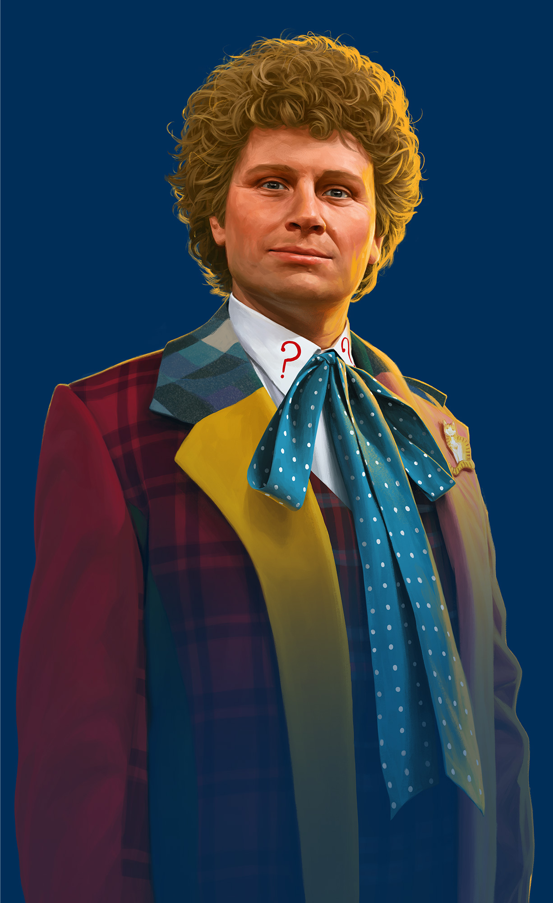
The Sixth Doctor is an incarnation of the Doctor, the protagonist of the BBC science fiction television
series Doctor Who. He is portrayed by Colin Baker. Although his televisual time on the series was
comparatively brief and turbulent, Baker has continued as the Sixth Doctor in Big Finish's range of
original Doctor Who audio adventures. Within the series' narrative, the Doctor is a centuries-old alien
Time Lord from the planet Gallifrey who travels in time and space in the TARDIS, frequently with
companions. At the end of life, the Doctor regenerates; as a result, the physical appearance and
personality of the Doctor changes. Baker portrays the sixth such incarnation, an arrogant, flamboyant
character in brightly coloured, mismatched clothes whose brash, often patronising personality set him
apart from all his previous incarnations.
The Sixth Doctor appeared in three seasons. His appearance in the first of these was at the end of the
final episode of The Caves of Androzani which featured the regeneration from the Fifth Doctor and
thereafter in the following serial The Twin Dilemma, the end of that season. The Sixth Doctor's era was
marked by the decision of the BBC controller Michael Grade to put the series on an 18-month "hiatus"
between seasons 22 and 23, with only one new Doctor Who story, Slipback, made on radio during the
hiatus, broadcast as 6 parts (at 10 minutes each) on BBC Radio 4 from 25 July to 8 August 1985, as part
of a children's magazine show called Pirate Radio Four. Colin Baker had been signed up for four
years, as the previous actor Peter Davison had left after only three years. Due to his decidedly
short screen time, the Sixth Doctor appeared with only two companions, most notably the American college
student Peri Brown (Nicola Bryant), before being briefly joined by Mel Bush (Bonnie Langford), a
computer technician from his future he had yet to actually meet during his trial.
Prior to its postponement, season 23 was well advanced with episodes already drafted and in at least one
case distributed to cast and production. Alongside "The Nightmare Fair", "The Ultimate Evil", "Mission
to Magnus", "Yellow Fever and How to Cure It", the remaining stories were still under development in a
25-minute episode format after the season was postponed. These were all dropped with the reconception of
the season in mid 1985 in favour of the 14-episode story arc The Trial of a Time Lord. The Sixth
Doctor also appeared in the special Dimensions in Time. There are also novels and audio plays featuring
the Sixth Doctor, and the character has been visually referenced several times in the revived 2000s
production of the show.
More so than any other canonical incarnation, aside from the Eighth Doctor, the Sixth Doctor has been
heavily expanded upon in expanded universe media, most notably in audio stories produced by Big Finish
Productions. In The Marian Conspiracy (2000), a new companion was introduced - Dr. Evelyn Smythe, a
middle-aged history lecturer on the verge of compulsory retirement whose sharp tongue and unwillingness
to tolerate the Doctor's attitude steadily taught him to rein in his more unkind tendencies. Due to this
influence, the Sixth Doctor evolved into a more compassionate and likable character. In addition,
beginning with the webcast Real Time (2003), his costume was revised into a monochromatic blue variant,
displayed on many audio stories' covers since then.
Seventh Doctor
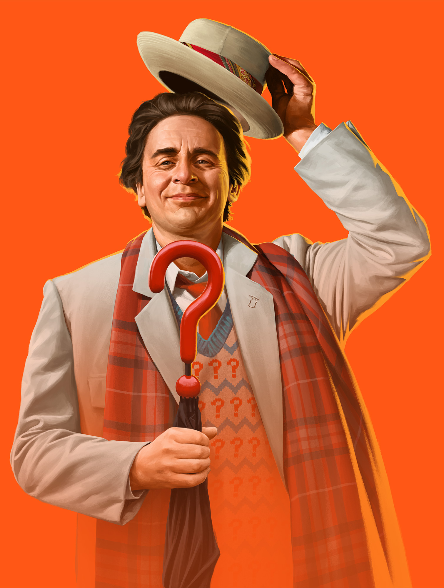
The Seventh Doctor is an incarnation of the Doctor, the protagonist of the BBC science fiction television
series Doctor Who. He is portrayed by Scottish actor Sylvester McCoy.
Within the series' narrative, the Doctor is a centuries-old alien Time Lord from the planet Gallifrey
who travels in time and space in the TARDIS, frequently with companions. At the end of life, the Doctor
regenerates; as a result, the physical appearance and personality of the Doctor changes.
McCoy portrays the Seventh Doctor as a whimsical, thoughtful character who quickly becomes more layered,
secretive, and manipulative. His first companion was Melanie Bush (Bonnie Langford), a computer
programmer who travelled with his previous incarnation, and who is soon succeeded by troubled teenager
and explosives expert Ace (Sophie Aldred), who becomes his protégée.
The Seventh Doctor first appeared on TV in 1987. After the programme was cancelled at the end of 1989,
the Seventh Doctor's adventures continued in novels until the late 1990s. The Seventh Doctor made an
appearance at the start of the 1996 movie before the character was replaced by the Eighth Doctor (Paul
McGann).
Eighth Doctor
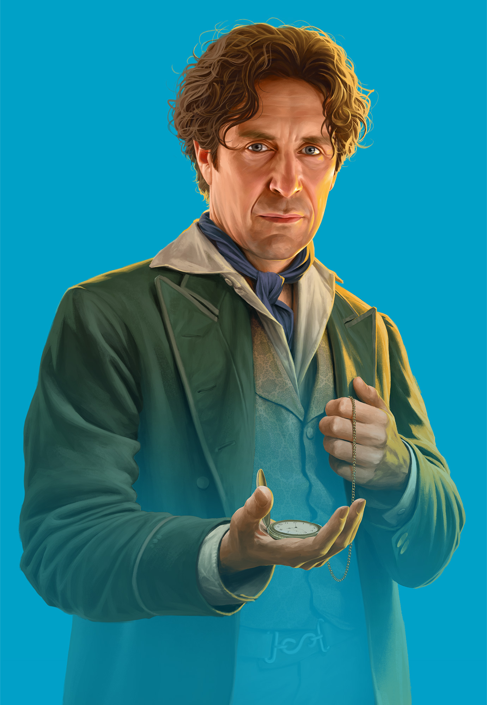
The Eighth Doctor is an incarnation of the Doctor, the protagonist of the BBC science fiction television
series Doctor Who. He is portrayed by Paul McGann.
The character was introduced in the 1996 TV film Doctor Who, a back-door pilot produced in an
unsuccessful attempt to relaunch the series following its 1989 cancellation. While the Eighth Doctor
initially had only one on-screen appearance, his adventures were portrayed extensively in subsequent
spin-off media, including more than 70 audio dramas starring McGann. In 2013, the actor reprised the
role in the mini-episode "The Night of the Doctor", which depicts the Eighth Doctor's final adventure
and his regeneration into the War Doctor (played by John Hurt).
Within the series' narrative, the Doctor is a centuries-old alien Time Lord from the planet Gallifrey
who travels in time and space in the TARDIS, frequently with companions. At the end of life, the Doctor
regenerates; as a result, the physical appearance and personality of the Doctor changes.
McGann portrays the eighth such incarnation, a passionate, enthusiastic, and eccentric character. His
only companion in the television film is Grace Holloway (Daphne Ashbrook), a medical doctor whose
surgery is partly responsible for triggering his regeneration. In the continued adventures of the
character depicted in audio dramas, novels and comic books he travels alongside numerous other
companions, including self-styled "Edwardian Adventuress" Charley, the alien Destrii and present-day
humans Lucie and Sam.
War Doctor
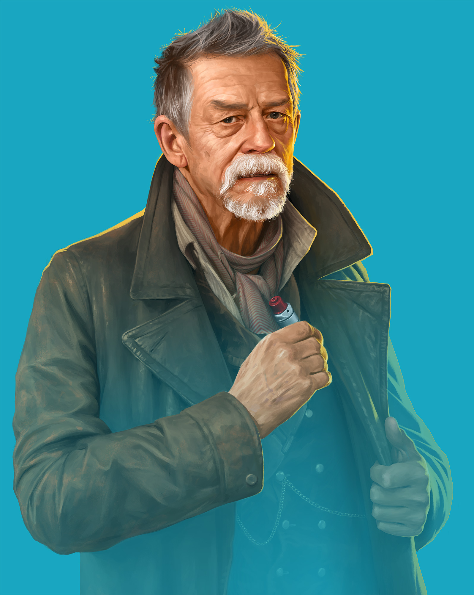
The War Doctor is an incarnation of the Doctor, the protagonist of the BBC science fiction
television programme Doctor Who. He was portrayed by the English actor John Hurt. Although he
precedes Christopher Eccleston's Ninth Doctor in the show's fictional chronology, his first onscreen
appearance came eight years after Eccleston's; the War Doctor was retroactively created by showrunner
Steven Moffat for productions celebrating the show's 50th anniversary.
Within the programme's narrative, the Doctor is an alien Time Lord from the planet Gallifrey, who is
hundreds if not thousands of years old and travels in time and space in his TARDIS, frequently with
companions. When the Doctor is critically injured, he can regenerate his body, but in doing so, gains a
new physical appearance and with it, a distinct new personality. This plot device has allowed a number
of actors to portray different incarnations of the Doctor over the show's long run.
The War Doctor, not so named within the episodes in which he appears, is introduced as the incarnation
of the Doctor who fought in the Time War of the show's modern-day backstory. He was created as a result
of a conscious decision of the Eighth Doctor, played by Paul McGann, to take up arms and become a
warrior; in accepting this duty, the War Doctor disowned the title of "Doctor", and after the war's end
is viewed with disdain by his subsequent incarnations, who reclaim the title that the character is known
by. In the 50th anniversary special "The Day of the Doctor", however, the Eleventh Doctor played by Matt
Smith revises his opinion of this incarnation after revisiting the final moments of the war.
In his original conception of the show's anniversary special, Moffat had written the Ninth Doctor as
having ended the Time War. However, he was "pretty certain" that Christopher Eccleston would decline to
return to the role, which he did. As he also had reservations about making Paul McGann's Eighth Doctor
the incarnation who had ended the war, he created a never-before-seen past incarnation of the Doctor,
which allowed him "a freer hand" in writing the story, acknowledging that the success of doing this
would be predicated on being able to cast an actor with a significant enough profile.
Ninth Doctor
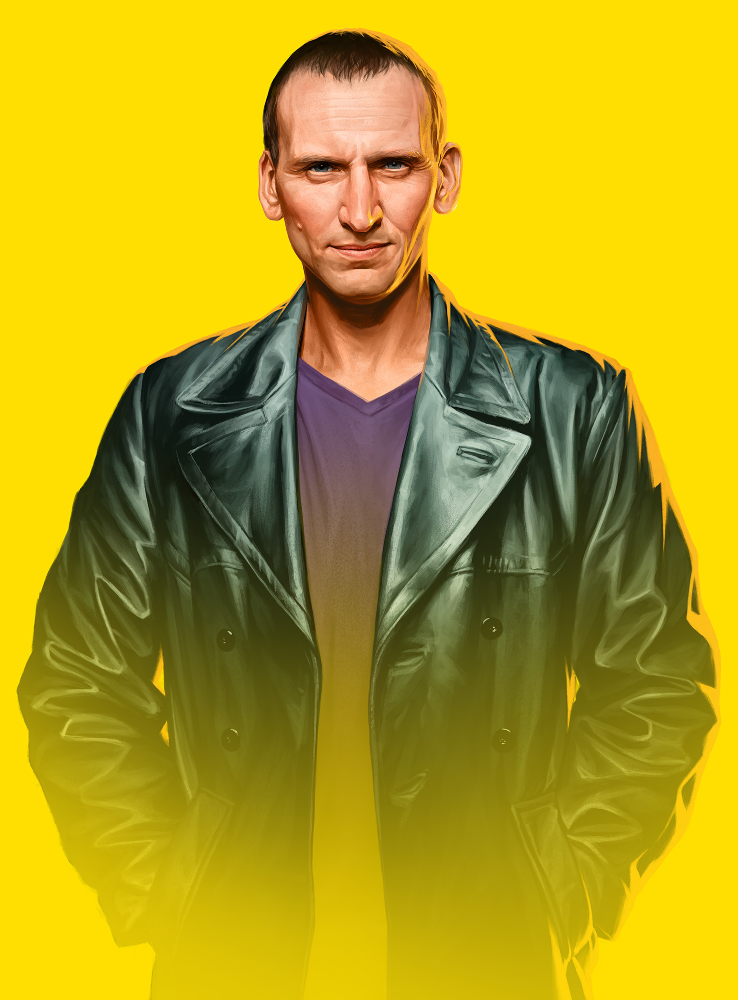
The Ninth Doctor is an incarnation of the Doctor, the protagonist of the BBC science fiction television
programme Doctor Who. He is portrayed by Christopher Eccleston during the first series of the show's
revival in 2005. Within the series' narrative, the Doctor is a centuries-old alien Time Lord from the
planet Gallifrey who travels in time and space in the TARDIS, frequently with companions. At the end of
life, the Doctor regenerates; as a result, the physical appearance and personality of the Doctor
changes. Eccleston's Doctor was a war-torn loner who disguises his trauma brought on by the Time War
using a sense of humour and determination to protect the innocent. The production team's approach to the
character and Eccleston's portrayal were highlighted as being intentionally different from his
predecessors, with Eccleston portraying the character as being less eccentric.
To fit in with a 21st-century audience, the Doctor was given a primary companion, Rose Tyler, played by
Billie Piper, who was designed to be as independent and courageous as himself. He also briefly travels
with Adam Mitchell (Bruno Langley), a self-serving boy genius who acts as a foil to the companions but
ultimately proves unworthy, and Captain Jack Harkness (John Barrowman), a reformed con man from the 51st
century. The Doctor, Rose and Jack form a close team but are separated in the series finale in which
each character has to make difficult choices and face sacrifice.
In 2006, readers of Doctor Who Magazine voted Eccleston's Doctor the third most popular Doctor. Both
mainstream press and science fiction reviewers generally credit Eccleston and his incarnation of the
character as helping to re-establish the show following its hiatus between 1996 and 2005. The
character's interactions with his arch-enemies, the Daleks, were particularly praised. Eccleston won
several awards for his single series including the 2005 National Television Award for Best Actor.
Tenth Doctor
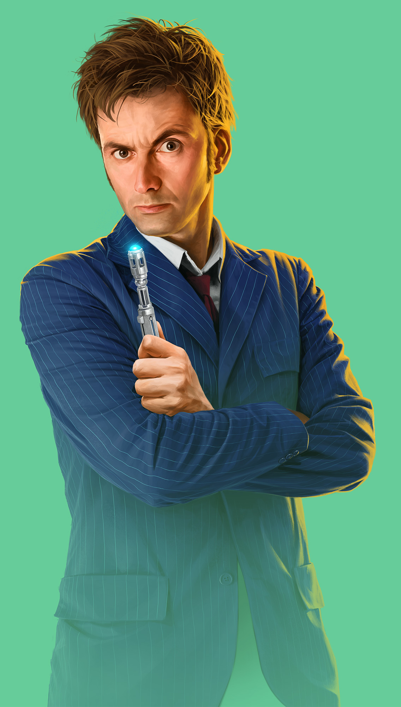
The Tenth Doctor is an incarnation of the Doctor, the protagonist of the BBC science fiction television
programme Doctor Who. He is played by David Tennant in three series as well as nine specials. As with
previous incarnations of the Doctor, the character has also appeared in other Doctor Who spin-offs.
Tennant's time as the Tenth Doctor is still very popular among fans of the show and is generally
regarded as one of the most iconic incarnations of the character, often ranked alongside Tom Baker's
Fourth Doctor.
Within the series' narrative, the Doctor is a centuries-old alien Time Lord from the planet Gallifrey
who travels in time and space in the TARDIS, frequently with companions. At the end of life, the Doctor
regenerates; as a result, the physical appearance and personality of the Doctor changes. Tennant's
portrayal of the Doctor is of an outwardly charismatic and charming adventurer whose likable and
easygoing attitude can quickly turn to righteous fury when provoked.
This incarnation's companions include working class shop assistant Rose Tyler (Billie Piper), medical
student Martha Jones (Freema Agyeman), and fiery temp worker Donna Noble (Catherine Tate). He eventually
parts ways with them all by the end of the 2008 series finale, "Journey's End", after which he attempts
to travel alone for the duration of the 2008–2010 specials before being accompanied by Donna's
grandfather Wilfred Mott (Bernard Cribbins) on his final adventure in "The End of Time".
Eleventh Doctor
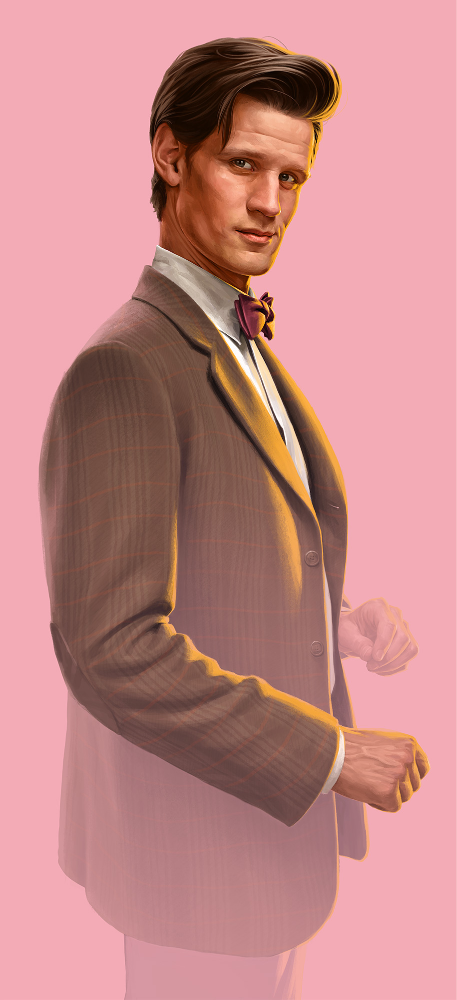
The Eleventh Doctor is an incarnation of the Doctor, the protagonist of the BBC science fiction
television programme Doctor Who. He is played by Matt Smith in three series as well as five specials. As
with previous incarnations of the Doctor, the character has also appeared in other Doctor Who spin-offs.
Smith's portrayal of the Eleventh Doctor has been critically acclaimed by critics and fans of the show.
Within the series' narrative, the Doctor is a centuries-old alien Time Lord from the planet Gallifrey
who travels in time and space in the TARDIS, frequently with companions. At the end of life, the Doctor
regenerates; as a result, the physical appearance and personality of the Doctor changes. Smith's
incarnation is a quick-tempered but compassionate character whose youthful appearance is at odds with
his more discerning and world-weary temperament.
This incarnation's main companions included feisty Scot Amy Pond (Karen Gillan), her husband Rory
Williams (Arthur Darvill) and the mysterious Clara Oswald (Jenna-Louise Coleman). He also frequently
appeared alongside River Song (Alex Kingston), a fellow time traveller with whom he shared a romantic
storyline, and he was the last Doctor to appear alongside the long-serving companion Sarah Jane Smith
(Elisabeth Sladen) prior to the actress' death, featuring in two episodes of the spin-off programme The
Sarah Jane Adventures.
Twelfth Doctor
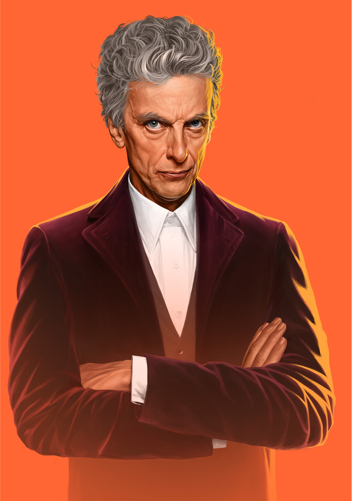
The Twelfth Doctor is an incarnation of the Doctor, the protagonist of the BBC science fiction television
programme Doctor Who. He is portrayed by Scottish actor Peter Capaldi. As with previous incarnations of
the Doctor, the character has also appeared in other Doctor Who spin-offs. Capaldi's portrayal of the
Doctor has been met with critical acclaim by critics and fans of the show.
Within the series' narrative, the Doctor is a millennia-old alien Time Lord from the planet Gallifrey
who travels in time and space in the TARDIS, frequently with companions. At the end of life, the Doctor
regenerates; as a result, the physical appearance and personality of the Doctor changes. Capaldi's
portrayal of the Doctor is a spiky, brusque, contemplative, and pragmatic character who conceals his
emotions in the course of making tough and sometimes ruthless decisions.
This incarnation's companions include school teacher Clara Oswald (Jenna Coleman), canteen assistant and
student Bill Potts (Pearl Mackie) and alien Nardole (Matt Lucas). He also made a guest appearance in the
Doctor Who spin-off series Class, appearing in the show's first episode.
Thirteenth Doctor
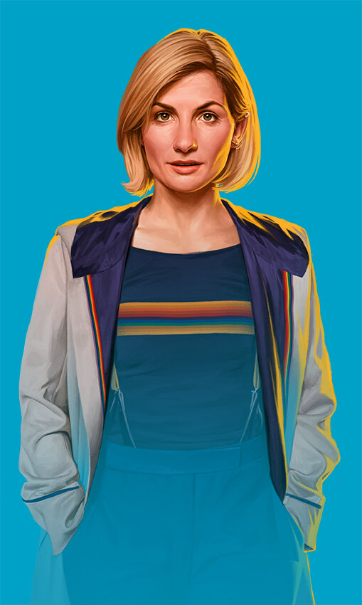
The Thirteenth Doctor is the current incarnation of the Doctor, the fictional protagonist of the BBC
science fiction television programme, Doctor Who. She is portrayed by English actress Jodie Whittaker,
the first woman to play the character in the series. First appearing in the show's eleventh series,
Whittaker is expected to leave the series as the Doctor following the thirteenth series and its
associated specials. She has received positive reviews for her portrayal of The Doctor.
Within the series' narrative, the Doctor is a millennia-old, alien Time Lord, with somewhat unknown
origins, who travels in time and space in their TARDIS, frequently with companions. At the end of life,
the Doctor regenerates; as a result, the physical appearance and personality of the Doctor change.
Whittaker's incarnation is a light-hearted adventurer with a passion for building things, placing a high
value on friendships and striving for non-violent solutions.
This incarnation's companions include dyspraxic part-time warehouse worker, Ryan Sinclair (Tosin Cole),
retired bus driver, and Ryan's stepgrandfather, Graham O'Brien (Bradley Walsh), and probationary police
officer, Yasmin Khan (Mandip Gill), all of whom she met shortly after her regeneration. She later
crosses paths with former companion, Captain Jack Harkness (John Barrowman) and is subsequently joined
by food bank volunteer, Dan Lewis (John Bishop).